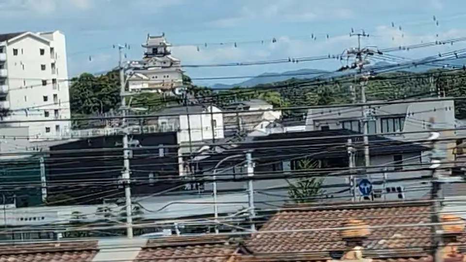

TOKAIDO SHINKANSEN WINDOW VIEW
掛川城はいつ見える？座席側は？
駅のすぐそばに、白い天守。

- 見える区間
- 掛川駅 前後
- 座席側
- E席・山側
- タイミング
- 東京発のぞみ基準で約62分後
- 写真
- 3 枚
掛川城の見つけ方
掛川駅の北側、小高い丘に白い天守が見えます。戦国武将・山内一豊が城郭を大改修し、城下町を整えた掛川城です。江戸時代の天守は安政の大地震で倒壊しましたが、現在の天守は1994年、日本初の本格木造復元天守として約140年ぶりによみがえりました。のぞみでは数秒なので、掛川駅が近づいたらE席側を。
もっと見る: 掛川市: 掛川城
東京から新大阪方面へ向かう場合は、掛川駅 前後が近づいたらE席・山側の窓を少し早めに見てください。新大阪から東京方面へ向かう場合は、通過順が逆になります。
位置の目安
地図をひらくスポット位置と、新幹線から見る位置を切り替えられます。
掛川城を見逃さないコツ
1. 先に見る方向を決める
掛川駅 前後が近づいたら、E席・山側の窓を先に意識してください。現在地から追う場合はライブガイド、事前に確認する場合はこのページの地図が役立ちます。
はっきり見えるのは数秒ほど。案内が出てからカメラを探すより、先に座席側と窓の方向を決めておくと拾いやすくなります。
2. 見どころ
歴史ある建物は、街の中に一瞬だけ差し込む目印として現れます。大きく眺めるというより、線路と街との距離感を味わうスポットです。
写真で見る掛川城


 関連
静岡の茶畑
関連
静岡の茶畑
 関連
浜名湖越しの富士山
関連
浜名湖越しの富士山
 関連
左富士
関連
左富士